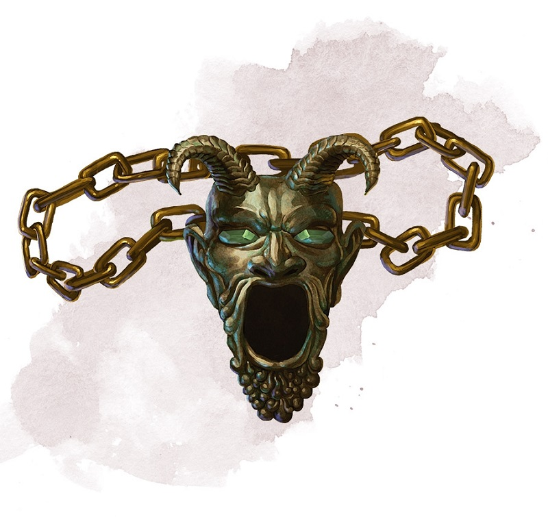

Talisman de la sphère
Objet merveilleux, légendaire (nécessite un lien)
Lorsque vous effectuez un jet d'Intelligence (Arcanes) pour contrôler une sphère d'annihilation alors que vous tenez ce talisman, vous doublez votre bonus de maîtrise pour le jet. En outre, lorsque vous démarrez votre tour en contrôlant une sphère d'annihilation, vous pouvez utiliser une action pour la faire léviter de 3 mètres plus un nombre de mètres supplémentaires égal à 3 x votre modificateur d'Intelligence.
Dungeon Master´s Guide (SRD)
